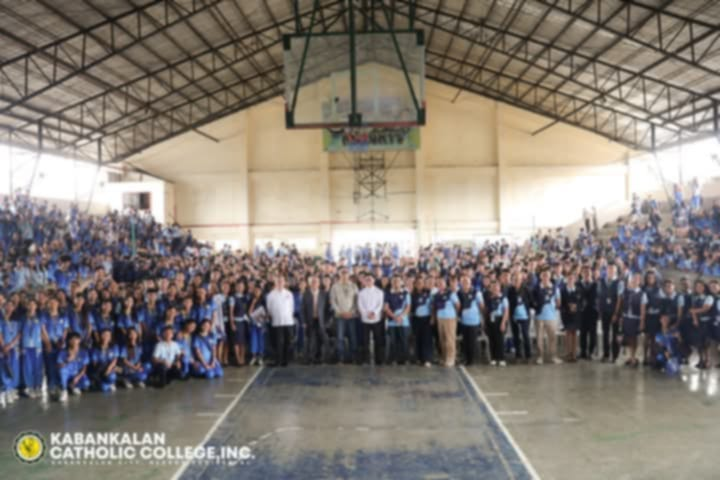

About KCC
Read an introduction to the college and its learning community.
Learn More →Discover campus activities, student experiences, and community events at Kabankalan Catholic College.
Discover KCC Get in TouchKabankalan Catholic College, Inc. is part of the educational community of Kabankalan City. This website introduces the college, highlights campus activities, and provides a starting point for visitors seeking information.
Explore the pages to learn more about the campus, academic information, student activities, and ways to contact the school.
About KCC
Find your way around the college website.
Read an introduction to the college and its learning community.
Learn More →Find guidance on where to confirm current program offerings and details.
Explore Programs →See photos that celebrate gatherings, events, and shared experiences.
View Campus Life →
School life also happens through shared activities, events, collaboration, and the relationships formed across the campus.
See Campus Activities